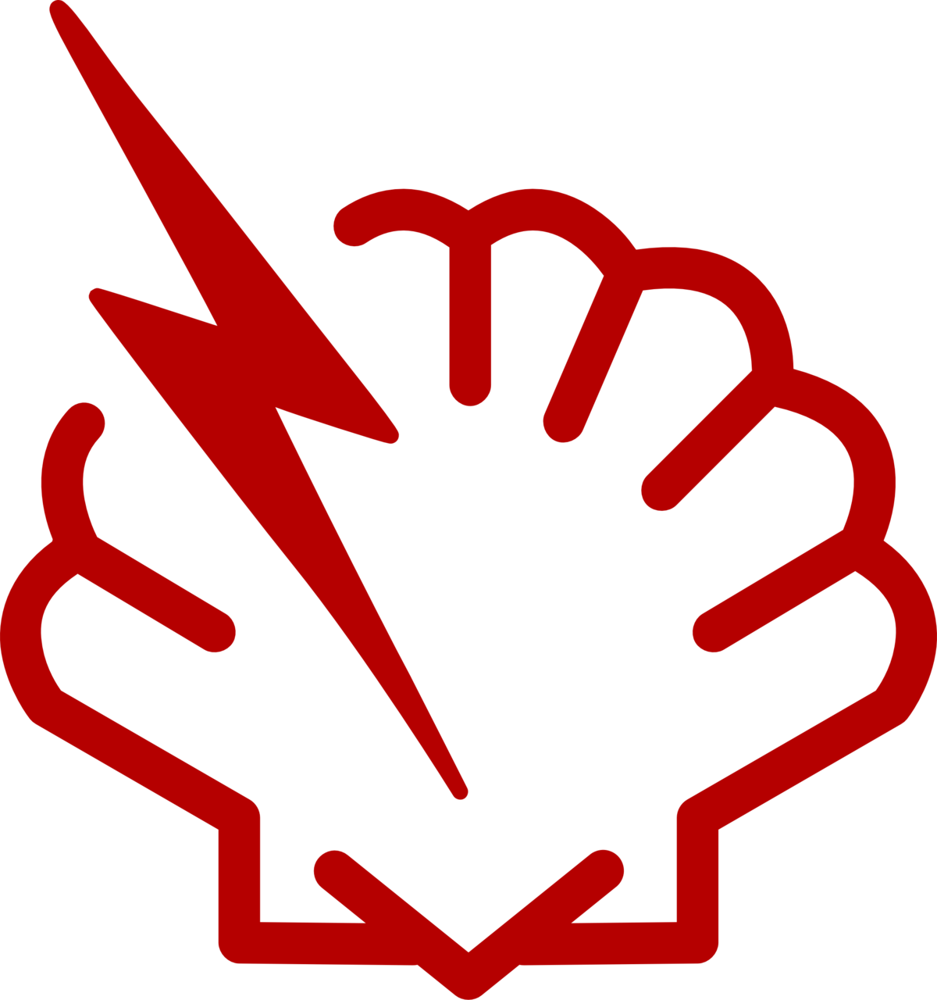
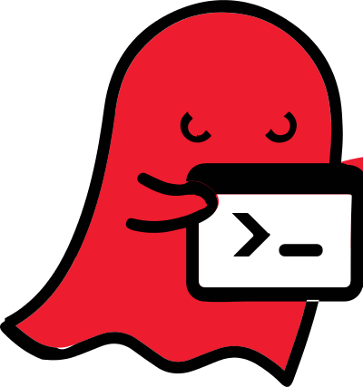

Container Security Scanner
April 20th, 2017
By Didier BERNAUDEAU
View online at https://git.io/XXXX
Keyboard Shortcuts
| Full Screen | F |
| Next Slide | Space bar |
| Slide Notes | S |
| Thumbnail View | Esc |
Container Image Layer
OS Middleware applicationVulnerabilities in a Container Image
 |
Heartbleed |
|  | Shellshock |
|  | Ghost (GLibC) |
Frequently Asked Questions:
- How many vulnerabilities affect a new containerized application?
- How many of your containerized applications are concerned by this new vulnerability?
... often without answers
Container Security Scanner
- Docker Security Scanning (by Docker on Docker Hub)
- Vulnerability Advisor (by IBM for BlueMix)
- OpenSCAP and Atomic Scan (by RedHat for OpenShift)
- Clair (by CoreOS and used by Quay.io)
Clair by CoreOS
- Perform static analysis
- Index container images only once (dpkg or rpm)
- Collect vulnerability data from Linux distribution (OVAL)
- Send notification to container repository
(or other software in the development pipeline)